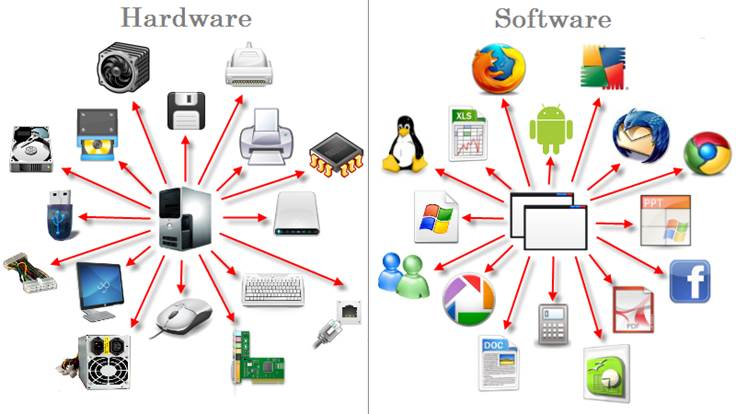

El mundo de la computación y la tecnología se encuentra en constante evolución, y con ello, el hardware y software que se utilizan para hacer posible la interacción entre el usuario y el equipo. Estos dos elementos son fundamentales para el correcto funcionamiento de cualquier ordenador o sistema informático.
El hardware es el conjunto de componentes físicos que conforman una computadora, desde la unidad central de procesamiento (CPU), hasta dispositivos de entrada y salida como teclado, mouse, pantalla, entre otros. Por otro lado, el software es el conjunto de programas, datos y rutinas que permiten el funcionamiento de la computadora.
En este ensayo se pretende profundizar en el tema del hardware y software, analizando su importancia, su evolución a lo largo del tiempo y cómo su relación está transformando el mundo en el que vivimos.
IMPORTANCIA DEL HARDWARE Y SOFTWARE EN LA TECNOLOGÍA
El hardware y software son elementos clave en la tecnología, ya que permiten el funcionamiento de cualquier sistema informático. Estos dos componentes están íntimamente ligados, ya que sin el hardware no se podría hacer funcionar el software y viceversa.
El hardware funciona como la base física de la computadora, proporcionando los elementos necesarios para que el sofware pueda ejecutarse. Por su parte, el software es la clave para que los componentes físicos de la computadora trabajen juntos de manera armoniosa.
Ambos componentes son fundamentales para la operación de cualquier dispositivo tecnológico, como teléfonos inteligentes, tabletas, sistemas de entretenimiento, entre otros. Esto permite a los usuarios interactuar con la tecnología, hacer la tarea más sencilla y eficiente, lo que significa una reducción en el tiempo, ahorro de recursos y mejoras en la productividad.
EVOLUCIÓN DEL HARDWARE
La evolución del hardware se ha producido en un proceso constante y gradual que ha permitido la creación de dispositivos más potentes y eficientes. La computación ha avanzado rápidamente en términos de velocidad, capacidad de almacenamiento y potencia de procesamiento.
Los primeros dispositivos que permitían a las computadoras procesar información eran enormes y ocupaban un espacio inmenso. Con el paso de los años, la tecnología evolucionó para crear dispositivos más pequeños y portables. Por ejemplo, en 1981 se lanzó la primera computadora personal de IBM, que pesaba cerca de 27 kilogramos y costaba aproximadamente $1.500 dólares.
Hoy en día, la tecnología ha avanzado lo suficiente para que los dispositivos sean mucho más pequeños y puedan contener más información de la que se almacenaba en las primeras computadoras. Los ordenadores portátiles, los smartphones y las tabletas son algunos ejemplos de esta evolución.
Además, la capacidad de procesamiento ha evolucionado de manera significativa, gracias al desarrollo de procesadores más potentes, los cuáles permiten una ejecución más rápida de los programas. Otros componentes como la memoria RAM y la tarjeta gráfica también han evolucionado y mejorado, para responder a las necesidades de los usuarios y al creciente volumen de información que se maneja en la actualidad.
EVOLUCIÓN DEL SOFTWARE
El software ha evolucionado también en paralelo con el hardware. El software inicial se programaba en lenguaje de máquina, que era muy difícil de entender para los programadores. Luego aparecieron los lenguajes de programación como el FORTRAN, el COBOL, el BASIC, entre otros que permitían al programador dar instrucciones al hardware de manera más sencilla y rápida.
Con el tiempo, aparecieron los sistemas operativos, como el DOS y posteriormente Windows, lo que permitió al usuario manejar el ordenador de manera más fácil. Posteriormente, aparecieron los primeros navegadores como Netscape y Explorer, que permitían navegar por la red y encontrar información de manera más eficiente. Hoy en día, el software ha evolucionado a la nube, lo que permite a los usuarios acceder a datos de manera remota.
CÓMO LA RELACIÓN ENTRE HARDWARE Y SOFTWARE ESTÁ TRANSFORMANDO EL MUNDO
La estrecha relación entre hardware y software está transformando la manera en que la tecnología está presente en todos los aspectos de nuestra vida cotidiana. Actualmente, todos los productos y servicios que consumimos están basados en estos dos elementos.
Algunas de las áreas que más se han visto impactadas por la combinación de ambos elementos son:
• Medicina – Los avances tecnológicos han permitido la creación de dispositivos médicos que permiten monitorear y tratar enfermedades de manera más eficiente.
Educación – La combinación de hardware y software ha permitido el acceso a la educación a distancia, e-learning, plataformas en línea y herramientas para la generación de contenido didáctico.
• Entretenimiento – Los videojuegos, películas y series se han visto impactados por la evolución de la tecnología, con mejoras en la calidad de imagen, sonido y plataformas más realistas.
• Comunicaciones – La conectividad ha mejorado gracias al avance del hardware y software, lo que permite una proliferación de dispositivos que permiten la comunicación a través de la red.
La relación entre hardware y software es fundamental para el correcto funcionamiento de cualquier dispositivo tecnológico. La evolución de ambos elementos ha permitido la creación de dispositivos más potentes, eficientes y portables. Además, ambas áreas están transformando nuestro mundo, permitiendo avances en campos como la medicina, educación, entretenimiento y comunicación.
El hardware y software son dos elementos que están estrechamente relacionados, y su evolución está transformando el mundo en el que vivimos. Los avances en ambos campos han permitido el acceso a la tecnología a más personas, y están mejorando sustancialmente la calidad de vida. Sin lugar a dudas, el futuro del hardware y software es prometedor, ya que su evolución permitirá seguir transformando la manera en que interactuamos con la tecnología.